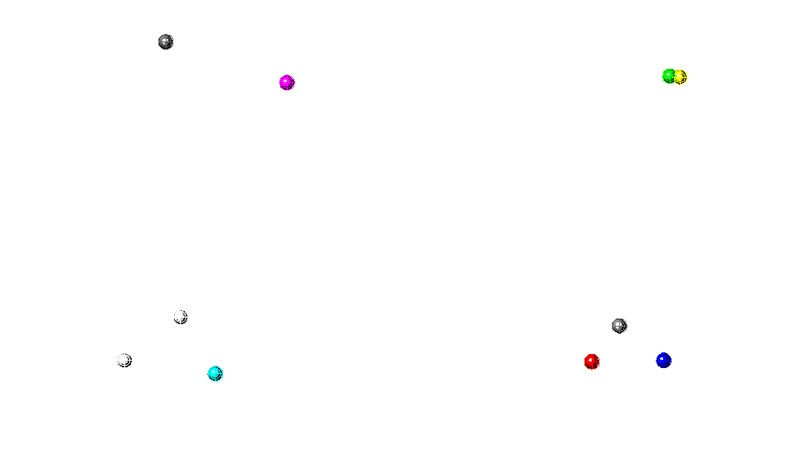

 |
|
Die Kugeln werden als
'nodes' bezeichnet. Das sind Einheiten, die über bestimmte
Eigenschaften verfüben - in diesem Fall die individuelle Bewegung
- und mit anderen nodes interagieren können um Informationen
auszutauschen und ihr Verhalten zu verändern. weiter > |
|
'Const unimax = 100 ' constant
never changes
Const unimin = 10 Const maxDist = 30Private Type flee '' opposite of public coo As Variant ''flee type self As Long ''another flee type End TypeSub traffic() Dim cp(0 To 2) As Double 'just like shelves o 1 2'&we can put any number like 100.53 in any shelf Dim amount As Integer 'we can have fixed numbers Dim range As Double Dim messagge As Variant, default As Variant Dim dude As AcadObject Dim ss As AcadSelectionSet Dim ssInhalt As Integer, i As Integer, j As Integer, u As Integer ThisDrawing.SendCommand "erase" & vbCr & "all" & vbCr & vbCr amount = 10 'howmany() ReDim loser(amount) As Variant Dim moveKoord(0 To 1) As Double For i = 0 To amount - 1 moveKoord(0) = (Rnd() * 10 - 5) / 2 moveKoord(1) = (Rnd() * 10 - 5) / 2 loser(i) = moveKoord For j = 0 To 1 cp(j) = random(unimin, unimax) Next j cp(2) = 0 ball cp '---center point Next i ThisDrawing.SendCommand "shade" & vbCr l Set ss = ThisDrawing.SelectionSets.Add("alle") ss.Select acSelectionSetAll '---select all objects ssInhalt = ss.Count For i = 1 To 10 '---send run order For u = 0 To ssInhalt - 1 Dim nodeA As Variant, nodeB As Variant Set dude = ss.Item(u) nodeA = dude.Centroid For j = u + 1 To ssInhalt - 1 'Abstandsvergleich mit den allen anderen ohne Doppelvergleich => j=u+1 Dim abstand As Double, dx As Double, dy As Double, bremse As Double bremse = 0.98 nodeB = ss.Item(j).Centroid dx = nodeA(0) - nodeB(0) dy = nodeA(1) - nodeB(1) abstand = distance(nodeA, nodeB) If abstand < maxDist Then 'Wenn sich zwei Kugeln zu nahe kommen verändern sie ihre Flugbahnen loser(u)(0) = (loser(u)(0) - (dx * 0.01)) * bremse loser(u)(1) = (loser(u)(1) - (dy * 0.01)) * bremse loser(j)(0) = (loser(j)(0) + (dx * 0.01)) * bremse loser(j)(1) = (loser(j)(1) + (dy * 0.01)) * bremse End If Next j run dude, loser(u), u Next u 'ThisDrawing.Regen acActiveViewport Next i ss.Delete End Sub Sub run(duder As AcadObject, change As Variant, col As Integer) Dim cen As Variant cen = duder.Centroid cen(0) = cen(0) + change(0) cen(1) = cen(1) + change(1) If cen(0) > unimax Then cen(0) = unimin If cen(0) < unimin Then cen(0) = unimax If cen(1) > unimax Then cen(1) = unimin If cen(1) < unimin Then cen(1) = unimax duder.Move duder.Centroid, cen duder.color = col duder.Update End SubSub ball(centrePoint() As Double) Dim sphereObj As Acad3DSolid Dim rad As Double rad = 1 Set sphereObj = ThisDrawing.ModelSpace.AddSphere(centrePoint, rad) sphereObj.color = acWhite sphereObj.Layer = "0" End SubFunction howmany() As Integer Dim Message As Variant, title As Variant, default As Variant Message = "How many balls" ' Set prompt. title = "spheres" ' Set title. default = "10" ' Set default. ' Display message, title, and default value. howmany = InputBox(Message, title, default) End FunctionFunction random(bn As Double, tn As Double) As Double random = ((tn - bn + 1) * Rnd + bn) End FunctionFunction distance(pta As Variant, ptb As Variant) As Double distance = Sqr((pta(0) - ptb(0)) ^ 2 + (pta(1) - ptb(1)) ^ 2 + (pta(2) - ptb(2)) ^ 2) End Function
|
\\ Entwurfsforschung \ Strukturexperimente \ autoCAD_VBA experimente